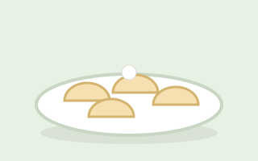

Вареники з картоплею

М’які вареники з картопляною начинкою та смаженою цибулею.
| Час | Порцій | Складність |
|---|---|---|
| 1 година 20 хв | 4 | Середня |
Інгредієнти
- 500 г борошна
- 250 мл теплої води
- 1 яйце
- 600 г картоплі
- 1 цибулина
- Сіль, олія, сметана
Приготування
- Замісіть тісто з борошна, води, яйця й солі та залиште на 30 хв.
- Відваріть картоплю, потовчіть і змішайте з обсмаженою цибулею.
- Розкачайте тісто, виріжте кружечки та наповніть начинкою.
- Затуліть краї й варіть у підсоленій воді 5 хв після спливання.
- Подавайте зі сметаною та смаженою цибулею.